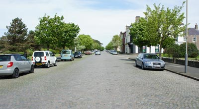
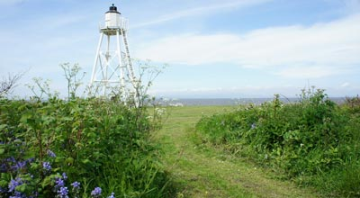
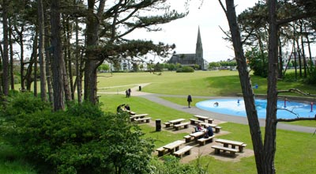
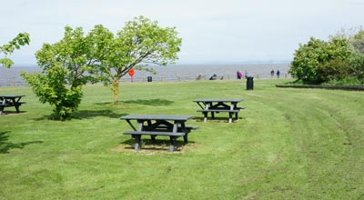
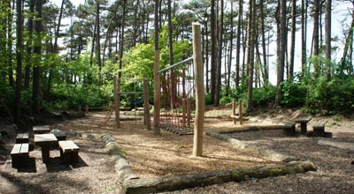
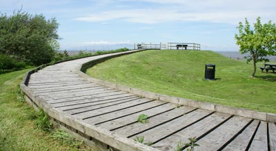

Silloth Tourist Information |
Renowned for its mild climate and spectacular sunsets, Silloth has been a popular family friendly holiday and visitor destination since the early 1860's when a newly built rail link (since closed) brought a large number of visitors from West Cumbria or, West Cumberland, as it was then known. Here, flanked on the one side by the waters of the Solway Firth and on the other by the Solway Plain, this uncrowded town with a population of around 3,000 has retained elements of genteel Victorian times whilst providing an assortment of modern amenities and fun activities. A rich blend of affordable holiday accommodations, traditional and specialist shops, a mini-supermarket, pubs , cafés and restaurants plus 2 banks, a post office and a Tourist Information Centre offer the convenience of a broad range of goods and services. During the summer months, Silloth is alive with the sights and sounds of events and festivals staged on the town's large central grassed area together with the annual August Bank Holiday showcase of Cumbria's biggest music festival held a little way outside the town. Refer to our Lake District Events Page for details and dates of Solfest, Silloth Greenfest, Silloth Food Festival, Vintage Rally, Silloth Kite Festival, Silloth Music & Beer Festival, Silloth Carnival, Watersports & Triathlon Festival, Silloth Christmas Market. |
|||
 |
 |
||
| Nearest Towns Maryport, Cockermouth, Carlisle |
Silloth to Wigton. 10 miles. Silloth to Carlisle. 19 miles. Silloth to St Bees Head. 28 miles. Silloth to Skiddaw. 19 miles. |
Nearest Villages: Skinburness, Beckfoot, Abbey Town, Calvo and Seaville. |
Nearest Lakes Bassenthwaite, Derwent Water |
Shops and Amenities in Silloth |
|||
C & D Supplies Beauty Salon Peter Josef Hairdressing Clive's Shape & Style Public Toilets: Criffel Street alongside Silloth Green opposite Christ Church. Includes disabled facilities. The northern promenade close to East Cote Lighthouse. Disabled facilities near the Lifeboat Station. |
Bank Post Office Chemists Silloth Library Veterinary Silloth Lifeboat Station Shop |
||
Silloth Tourist Information CentreSilloth Local Link |
|||
How to get there: |
|||
| By rail: From the West Coast Main Line, alight at Carlisle and travel the 20 miles by road, or transfer to Wigton or Maryport on the West Cumbrian coast line. From Wigton the journey is 10 miles by road. |
By road: Reach us from Carlisle on the A595/A596 to Wigton and then take the B5302; OR the B5301 from Aspatria. If travelling from Penrith (M6, J41) take the B5305 to Wigton, and then proceed on the B5302 to Silloth. Bus services from Silloth to Carlisle, Maryport, Wigton and Skinburness. |
||
 |
 |
Silloth Attractions |
|
| Silloth Green A large well kept grassed area extending to within yards of the promenade on which many of the Silloth events take place during the summer months. It's an ideal place for a picnic and for children to safely run free and enjoy a well laid out adventure playground in a wooded setting together with the water attraction of the nearby children's Splash Pad. Close by is a Kids Bikes & Cars circuit together with food and drinks. Not far beyond is a tennis hard court and a football playing area complete with goal posts. From here it's a pleasant stroll to a Silloth landmark of East Cotes Lighthouse. The lighthouse was originally established in 1864 as a mobile structure on a short rail track but converted to a fixed position in 1914. Please note that bathing in this area is dangerous. All areas of the Green are family friendly and lead to the promenade with it's benches, picnic tables, fine views and fishing in the waters of the Solway Firth. |
The Town Standing on the Solway Coast, Silloth combines with the sea and surrounding countryside attractions to offer the complete family holiday. There is easy access to the safe West Beach, picnic areas, swimming, tennis courts, putting green and amusement arcade. The dramatic sunsets, best viewed from the wide traffic free promenade, were of great inspiration to the artist J.M.Turner. |
| Solway Coast This is unspoiled nature at its best and it more than deserves the status of an area of outstanding natural beauty. It provides shelter for wading birds, waterfowl, plovers, oyster catchers and is the countrys only wintering ground of the Spitzbergen Barnacle Geese. A broad variety of plants and flowers flourish on the shoreline and alongside the coastal paths. A shoreline stroll from Silloth to Skinburness is particularly rewarding. www.lakedistrict-solwaycoast.co.uk |
Solway Coast Discovery Centre Open all year round 10am-4pm. Groups welcome by appointment, one day Educational parties, coach parties by arrangement. Disabled access and facilities. Come and be guided through 10,000 years of Solway History and how the Vikings, Romans and Monks developed this beautiful area. Liddell Street, Silloth-on-Solway, Cumbria CA7 4DD Phone: 016973 33055 |
| Solway Shore Stories A place where you will enjoy discovering more about the Solway Firth, the extraordinary stretch of water that both divides and unites the South-West corner of Scotland and the North-West corner of England. www.solwayshorestories.co.uk |
Gin Case & Craft Barn Mawbray Hayrigg near Silloth. Handmade Arts & Crafts, art gallery, farm park with rare and unusual animals and poultry. Free parking, disabled access and toilets. www.gincase.co.uk |
| Soldiers in Silloth Toy Soldier Experience This is a first-class exhibition/museum displaying toy soldiers and related items as a new visitor attraction. It is based on a private collection of over 10,000 figures, vehicles, guns, castles etc built up by a local resident and run by a group of local volunteers on behalf of the community. Exhibits include a 60 square foot "diorama" (a table-top model) representing the Battle of Waterloo and a large-scale model of part of a Hadrian's Wall milecastle. There are toy soldiers from around the world dressed in uniforms of almost every period of warfare up to World War II along with cowboys and indians, ancient Greeks, vikings and much more. There are forts and castles, cannons and catapults, chariots and tanks. Some of the toys are over a century old, made in Europe, America, Japan and (of course) Hong Kong. There are Victorian lead soldiers of the sort Winston Churchill used to play with and modern plastic ones like those in "Toy Story". Antique and toy soldiers, books etc for sale. Open Tuesday to Sunday from May to September and at weekends and holiday times the rest of the year. Opening hours may vary according to volunteer availability. For details or bookings call 016973 31246 www.soldiersinsilloth.co.uk |
|
| Bank Mill Nurseries Bank Mill Nurseries and Visitor Centre is situated in a designated Area of Outstanding Natural Beauty and adjacent to a Site of Special Scientific Interest. The beautiful Solway Coastline is just 200 metres away. www.bankmillnurseries.co.uk |
Sea Fishing The sea around Silloth is a rich source of food for the many types of fish which includes flounder, dab, plaice and eel. Fishing is permitted anywhere from the promenade between Cote Light and Skinburness. Purely as a matter of interest, anglers may wish to browse www.regia.org/fishing which displays information of the Viking tradition of Haaf Netting; a method seldom used these days. |
| Mountain Biking The trails tracks and routes around Silloth, the Solway Coast and the Lake District fells, have been elected as the U.K.’s best destination for this sport. There’s plenty of challenges for all levels of ability graded 1 – 5 including the demanding rides to the summits of the regions highest peaks. |
Cycling Level tracks and trails along the Solway coast and Solway Plain. Silloth stands on the 2nd leg of Hadrians Cycleway. |
| South Solway Moss Nature Reserve Home to Bowness common, Glasson Moss, Wedholme Flow and Drumburgh Moss. These are 4 of the best remaining peat bogs in Europe. |
Golf The Silloth-on-Solway Golf Clubs 18 hole 6,600 yard course is placed high on the list of best courses. Since 2002 it has been a qualifying course for The British Open and is additionally blessed with some of the finest views to be had. Open all year. |
| West Beach An ideal spot for fishing and picnics. A safe playground for children. |
Silloth Promenade Great for traffic free strolls and views especially of the sunsets. |
| Annual Events Silloth hosts some of the most popular festivals in the region. The much acclaimed Solfest probably comes at the top of the list and features a huge choice of entertainments. There is music from some of the countrys best known groups, yoga sessions, a wind powered workshop tent, African dance workshop, drumming workshops, stalls, and so much more. This Silloth extravaganza is held on the August Bank Holiday weekend and in the 2007 awards, was voted the most family friendly festival in the country. For dates and information of this and Carnival Day, Beer Festival, Vintage Rally, Kite Festival, Food Festival and others, please check our Silloth Events Page. |
Mawbray Banks Nature Reserve The home of many species of bird-life and the Natterjack Toad. |
| Walking Cumbria Coastal Way. The 150 miles (240 kms.) of footpaths along the Coastal Way includes Silloth. Allerdale Ramble. A 54 mile ( 86 kms.) walk beginning at Seathwaite in Borrowdale passes through Silloth. The Silloth Sea, Sand & Shingle Stroll. Three non demanding trails around Silloths coastline. Details from the Tourist Information Centre. |
|
 |
 |
Food and Drink in Silloth |
|
| Mrs Wilson's Coffee House & Eaterie Open daily for scones, cakes and lunches. Criffel Street. Silloth. |
Gincase Art & Craft Barn, Mawbray, Hayrigg, Silloth Licensed Cumbrian Farmhouse Tea Room. Hot & cold lunches, afternoon teas. Childrens Farm Park, playground, indoor play barn and a walk thro' area of free flying parrots. www.gincase.co.uk Tel: 016973 32020 |
| Silloth Café 2 Station Road, Silloth. Café-Takeaway. Morning coffee, tea, sandwiches, a selection of home baked produce and generous portions of fish and chips. Pensioners Specials available. Tel: 016973 31319 |
Longwood Garden Centre Tea Rooms Wigton Road, Silloth. Baguettes, sandwiches, home-made scones, tea, coffee, soft drinks. Plenty of indoor seating. www.longwoodgardencentre.co.uk Tel: 016973 32465 |
| Cups & Saucers Farm Tea Rooms Seaville Farm, near Silloth. Sandwiches, home-made soups, toasties, tea & coffee all made with milk from our own Jersey cows. Tel: 016973 61256 |
|
| Rays Shrimps Factory outlet, 1, Station Road Industrial Estate, Silloth. Peeled Brown Shrimps, vacuum packed, Potted Shrimps in Butter or Garlic. Tel: 016973 31215 www.raysshrimpsltd.co.uk |
The Kandy Shop Confectionery, tobacco, newspapers and magazines. Criffel Street. Silloth. |
| The Station Tearoom Sandwiches, homemade cakes, scones, cream tea, homemade gingerbread, ice cream, hot and cold drinks and takeaway. Station Road. Silloth. |
Baguettes Set & Go Co A wide selection of baguettes, rolls, pannis, wraps, jacket potatoes, salad boxes and, a hearty breakfast box until 11.30 am. Open 6 days a week 8.30am – 2pm. Closed Sundays. 17 Eden Street. Tel: 016973 32000 |
| Berry & Son Traditional Bakers. Criffel Street. |
The Ice Cream factory Traditional Homemade Dairy Ice Cream. Criffel Street. |
| Blue Dolphin Cafe All day breakfast, kids menu, hot and cold snacks, eat in or take away. Criffel Street. |
Kirkup & Son Family Butcher's. Eden Street. |
| Fruit Link Fresh Fruit and Vegetables. Station Road. |
Mobile Ice Cream Van Stands near the Lifeboat Station on summer days. |
Silloth Taxi Services |
|
| Able Travel Cumbria Brunswark Terrace, Solway Street, Silloth. Telephone for prompt efficient services. 016973 31508 |
Solway Private Hire Private Hire; Airport Transport Services; Days/Nights Out; Group Transport (a choice of 4, 6 or 8 seats) Disabled access vehicles; Advance Bookings. Phone 016973 32310 www.solwayprivatehire.co.uk |